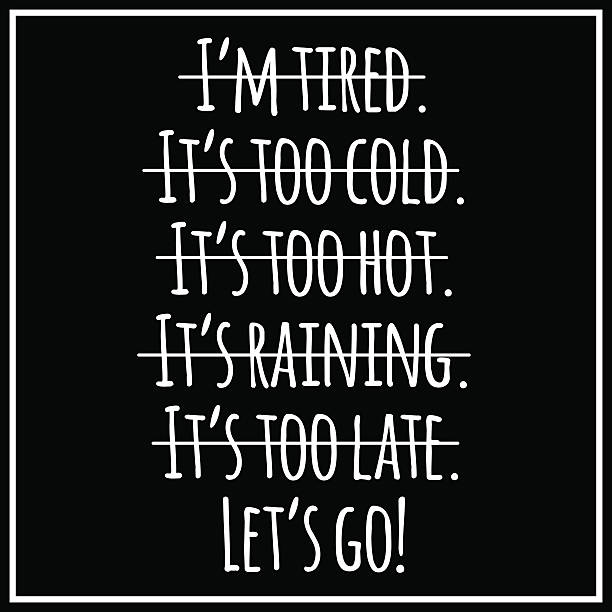
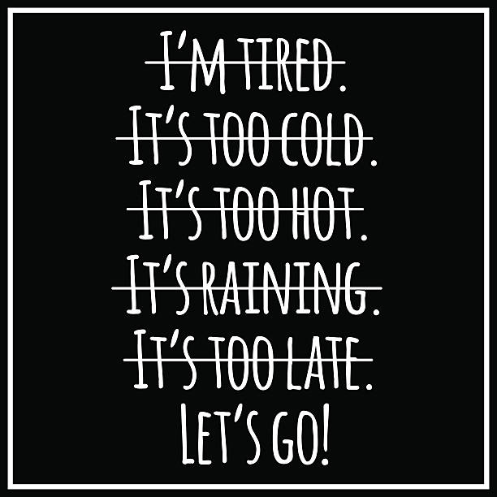

Overview
Purpose
The purpose of this website is to provide structured workout routines, fitness advice, and nutrition tips. It is designed to help individuals of all fitness levels create a sustainable and effective workout plan that fits their lifestyle. Whether someone is a complete beginner, returning to fitness, or looking for expert-level training, the site will provide the necessary tools to achieve their fitness goals.
The website will feature video tutorials, workout plans, nutrition guidelines, and progress-tracking strategies to make fitness more accessible. Users will also find motivational content, expert fitness coaching insights, and a supportive community to stay engaged with their health journey.
Our mission is to simplify fitness for busy professionals, students, and anyone looking to adopt a healthier lifestyle. Through structured content, we aim to empower individuals to take control of their physical well-being and achieve long-term success.
Audience
This website is designed for a broad audience, including beginners, college students, and busy professionals looking for simple and effective fitness guidance.
Beginners Those who have little to no experience in fitness and need step-by-step guidance to start a workout routine, understand proper form, and set achievable goals.
College Students Young adults who want to stay active despite their tight schedules. They need workouts that fit into their lifestyle, requiring minimal equipment and short durations.
Busy Professionals Working individuals who struggle to balance fitness with their careers. The site offers time-efficient workouts and meal prep ideas to help them stay in shape despite their demanding routines.
Branding
Website Logo

Style Guide
Color Palette
| Primary | Secondary | Accent 1 | Accent 2 |
|---|---|---|---|
Typography
Heading Font: Montserrat
Paragraph Font: Roboto
Navigation
Site Map
Content
Home Page
Welcome to Fitness Training, your go-to resource for expert-backed fitness programs, workout guides, and nutrition advice. Whether you are looking to build muscle, improve endurance, lose weight, or simply stay active, we provide customized fitness plans that fit your lifestyle.
Our website includes - Structured workout routines for all fitness levels - Expert advice on exercise techniques - Meal plans and nutrition tips for optimal performance - Motivation and guidance to help you stay on track
Images for the Home Page
 

Workout Plans
Workout Plans offers detailed programs for different fitness goals, including strength training, endurance workouts, and flexibility routines. Our tailored programs include - Beginner-friendly workouts - At-home and gym variations - Time-efficient routines for busy schedules - Video demonstrations for correct form and technique
No matter your fitness level, we provide easy-to-follow plans with progress tracking to ensure you stay motivated and consistent.
Images for Workout Plans


Nutrition and Recovery
Achieving fitness goals is not just about working out – proper nutrition and recovery play a crucial role. This section provides - Balanced meal plans tailored for muscle gain, fat loss, or maintenance - Hydration and supplementation guides - Recovery techniques such as stretching, foam rolling, and sleep optimization
Images for Nutrition and Recovery

Wireframes
Three wireframes for your site, one for each page
Home

Workout Plans